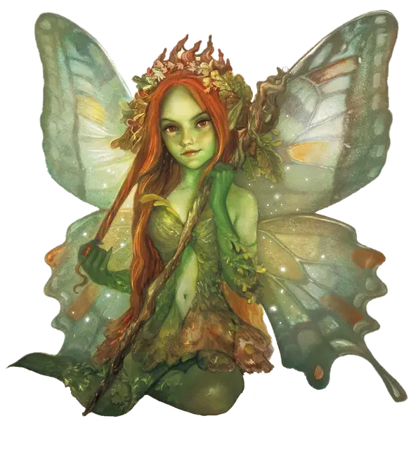

Пикси
Pixie
Крошечная Фея (Фея), нейтрально-добрая

Класс Доспеха 15
Хиты 1 (1к4 - 1)
Скорость 10 футов, летая 30 футов
| мод | спас | ||
|---|---|---|---|
| СИЛ | 2 | −4 | −4 |
| ЛОВ | 20 | +5 | +5 |
| ТЕЛ | 8 | −1 | −1 |
| мод | спас | ||
|---|---|---|---|
| ИНТ | 10 | +0 | +0 |
| МДР | 14 | +2 | +2 |
| ХАР | 15 | +2 | +2 |
Навыки Восприятие +4, Скрытность +7
Чувства пассивное Восприятие 14
Языки Сильван
Опасность 1/4 (50 опыта)
Бонус мастерства +2
Среда обитания Лес
Особенности
Сопротивление магии. Пикси совершает с преимуществом спасброски от заклинаний и прочих магических эффектов.
Врождённое колдовство. Базовой характеристикой пикси является Харизма (Сл спасброска от заклинания 12). Он может накладывать следующие заклинания, используя вместо всех компонентов пыльцу пикси:
• Неограниченно: искусство друидов [druidcraft];
• 1/день каждое: воображаемая сила [phantasmal force], обнаружение зла и добра [detect evil and good], обнаружение мыслей [detect thoughts], опутывание [entangle], пляшущие огоньки [dancing lights], полёт [fly], превращение [polymorph], рассеивание магии [dispel magic], смятение [confusion], усыпление [sleep].
Действия
Превосходная невидимость. Пикси магическим образом становится невидимым, пока не окончится концентрация (как при концентрации на заклинании). Все снаряжение, которое пикси несет или носит, становится невидимым вместе с ним.
Описание
«ПЛАТЬЯ ИЗ ЛЕПЕСТКОВ И ШАПОЧКИ ИЗ ЖЕЛУДЕЙ ВЫШЛИ ИЗ МОДЫ ПРОШЛЫМ ЛЕТОМ!»
— РИВЕРГЛИМ, ПИКСИ МОДНИЦА
Имеющие рост около 30 сантиметров, пикси напоминают крохотных эльфов с тонкими крылышками как у стрекоз или бабочек, яркими, как ясный рассвет, и блестящими, как восход полной луны. Любопытные как кошки и пугливые как лань, пикси идут туда, куда им хочется. Им нравится шпионить за существами, и они с трудом сдерживают охватывающее их возбуждение. Они испытывают непреодолимое желание представиться и завязать дружбу; только страх быть атакованными или схваченными сдерживает их. Оказавшийся на поляне пикси незнакомец может никогда не увидеть их, но при этом слышать хихиканье, стоны и вздохи.
Пикси наряжаются как принцессы и принцы фей, одевая струящиеся платья и дублеты из шелка, которые искрятся как лунный свет на пруду. Некоторые одежды украшены желудями, листьями, корой и шкурками маленьких лесных зверей. Они гордятся своими регалиями и светятся от счастья, когда их туалет удосуживается похвалы.
Волшебный народец. С их врождённой способностью быть незаметными, пикси редко появляются на глаза, если только не захотят быть увиденными. В Стране Фей и на Материальном Плане пикси рисуют морозные узоры на зимних прудах и пробуждают почки растений весной. Блеск цветов от летней росы и смена окраса листьев осенью — также работа их рук.
Пыльца пикси. Если пикси летит, будучи видимым, за ним тянется шлейф блестящей пыльцы, подобный сверкающему хвосту метеора. Осыпание пыльцой пикси, как говорят, может даровать способность летать, безнадежно запутать существо или усыпить врага волшебным сном. Только пикси могут использовать весь потенциал своей пыльцы, но за ними постоянно ведут охоту маги и чудовища, желающие изучить или заполучить их силу.
Крошечные проказники. Появление незнакомца возбуждает их любопытство, но пикси очень пугливы, чтобы обнаружить себя первыми. Они наблюдают за посетителем издалека, изучая его характер или устраивая безвредные пакости, дабы увидеть реакцию. Например, пикси могут связать ботинки гнома, создать иллюзию странного существа или сокровища, или использовать пляшущие огоньки для введения чужака в заблуждение. Если визитер отреагирует негативно, пикси посторонятся его. Если же он доброй натуры, то пикси станут смелее и доброжелательнее. Они даже могут раскрыть себя и показать своим «гостям» безопасный путь или же пригласят на маленький, но сытный пир, приготовленный в их честь.
Противники насилия. В отличие от их родственников, спрайтов, пикси гнушаются оружия и скорее спасутся бегством, чем вступят в физическую схватку с врагом.